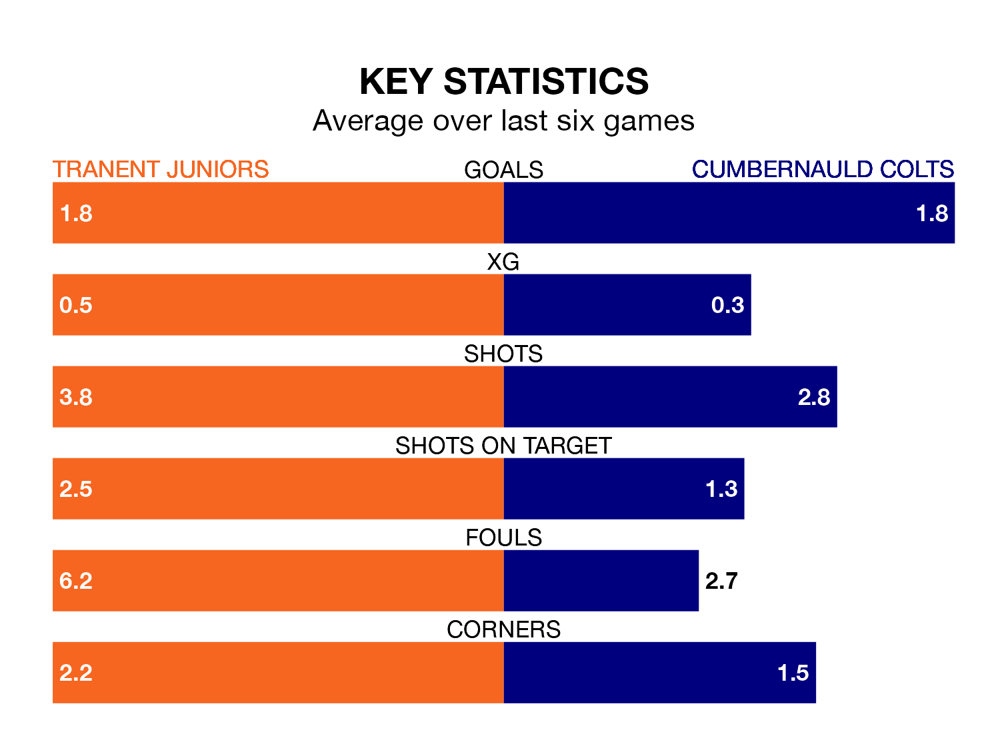

Two of the Lowland Football League's meanest defences go head-to-head at Foresters Park on Saturday, when Tranent Juniors host Cumbernauld Colts.
Only one side – Albion Rovers – has conceded fewer goals than Tranent Juniors to date: the home side have let in just 29 goals in 27 games.
Colts have conceded 33 goals in 28 games, giving them the fourth tightest back line so far this season.
Cumbernauld Colts are third in the table after 28 games, of which they have won 16 and drawn seven, earning 55 points.
Tranent Juniors are two places behind Colts in fifth, with 16 wins and four draws putting them on 52 points.
In the last five years, Tranent Juniors and Cumbernauld Colts have played each other on four occasions. Tranent Juniors won all of them.
On average, the Belters scored 3.2 goals and Colts 0.8 in those matches.
Their last meeting was on Tuesday, when Tranent Juniors won 4-0 at home.
The Belters are in mixed form in the Lowland Football League, with three wins and three losses from their last six games.
With three wins and two draws over that period, the away team's form is slightly better – they have taken 11 points from 18, compared to the hosts' nine.
Tranent Juniors's last match was on March 9, a 2-1 loss against Celtic B.
Cumbernauld Colts drew 1-1 with Linlithgow Rose last time out, also on March 9.
Updated: 15:10 (UTC), 15/03/24